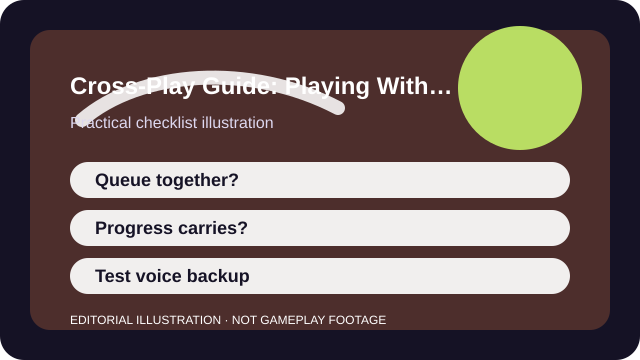

QUICK ANSWER
The short version
Treat cross-play, cross-progression, and cross-voice as three separate questions, then test them before the real game night.
Players often say "the game has cross-play" as if that answers everything. It does not. You still need to confirm who can party together, whether saves or purchases move with you, and which voice tools the group will actually use.
Those details matter most when a mixed-platform group is excited and already waiting. A five-minute setup test ahead of time is much cheaper than a launch-night surprise.

CHECKLIST
What to confirm before you change anything
- Confirm which platforms the developer officially supports in the current version.
- Check whether input pools or ranked playlists separate players even when cross-play exists.
- Link publisher or game accounts early if the game requires them.
- Verify whether cosmetics, saves, or passes move across devices or stay locked to one platform.
- Agree on a backup voice or text plan before the first full session.
The most common failure is assuming that one successful login means the rest of the system will just work. Party, save, and voice rules are often separate.
SCENARIO
When two friends own the same game on different devices and assume saves will follow
A lot of friction appears after the install. One friend launches on console, another on PC, and both assume their progress or purchases will simply appear because the publisher account is shared. That is not always true, and discovering it late turns a fun plan into support research.
By testing party creation, one quick queue, and one progression check in advance, you learn what the group can rely on and what needs a fallback. That keeps expectations honest before money or time gets committed.
PROCESS
A repeatable way to work through it
Verify the official support matrix
Cross-play features are only real if the developer says the current version supports them for your platforms.
Link accounts before the big download ends
If a publisher account is needed, set it up early while the stakes are low.
Run a five-minute party test
Create the party, queue one low-pressure mode, and confirm invites, voice, and matchmaking all behave as expected.
Document what does not transfer
Knowing that progress or cosmetics stay local is useful information if the group needs to choose a lead platform.
A clean cross-play setup reduces social friction more than any one hardware upgrade. Once the group trusts the process, starting a session becomes ordinary again.
COMMON MISTAKES
What usually makes the problem worse
Assuming the same publisher means the same save rules
Cross-play and cross-progression are often related but not identical features.
Ignoring region or input restrictions
A group can technically play together and still land in a compromised playlist that one person hates.
Buying on multiple platforms before testing
A short setup check can stop an expensive duplication mistake.
SUCCESS CRITERIA
How to know the change actually worked
- The group can invite, queue, and talk without last-minute troubleshooting.
- Everyone knows where progression and purchases do or do not carry over.
- There is a backup voice or chat option ready if the in-game tool fails.
- Choosing the lead platform for the group feels deliberate instead of accidental.
Cross-play success is really compatibility confidence. Once the group knows the boundaries, the feature stops being marketing language and starts being practical.
SOURCES AND LIMITS
Where to verify live details
- Developers can change cross-play and cross-progression rules after updates or regional launches.
- Ranked matchmaking and input-pool rules often remain more restrictive than casual modes.
- Platform-store refunds and entitlements are outside the control of general setup advice.
Menu names, defaults, and device behavior can change after updates. Use the linked official support surfaces for the current live details and keep this guide for the process around them.